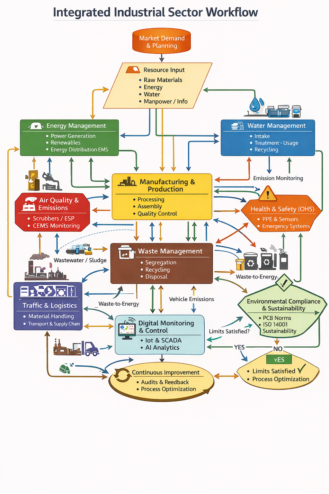
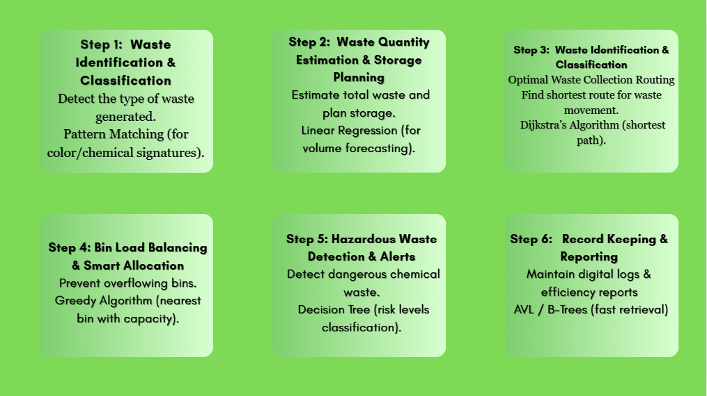
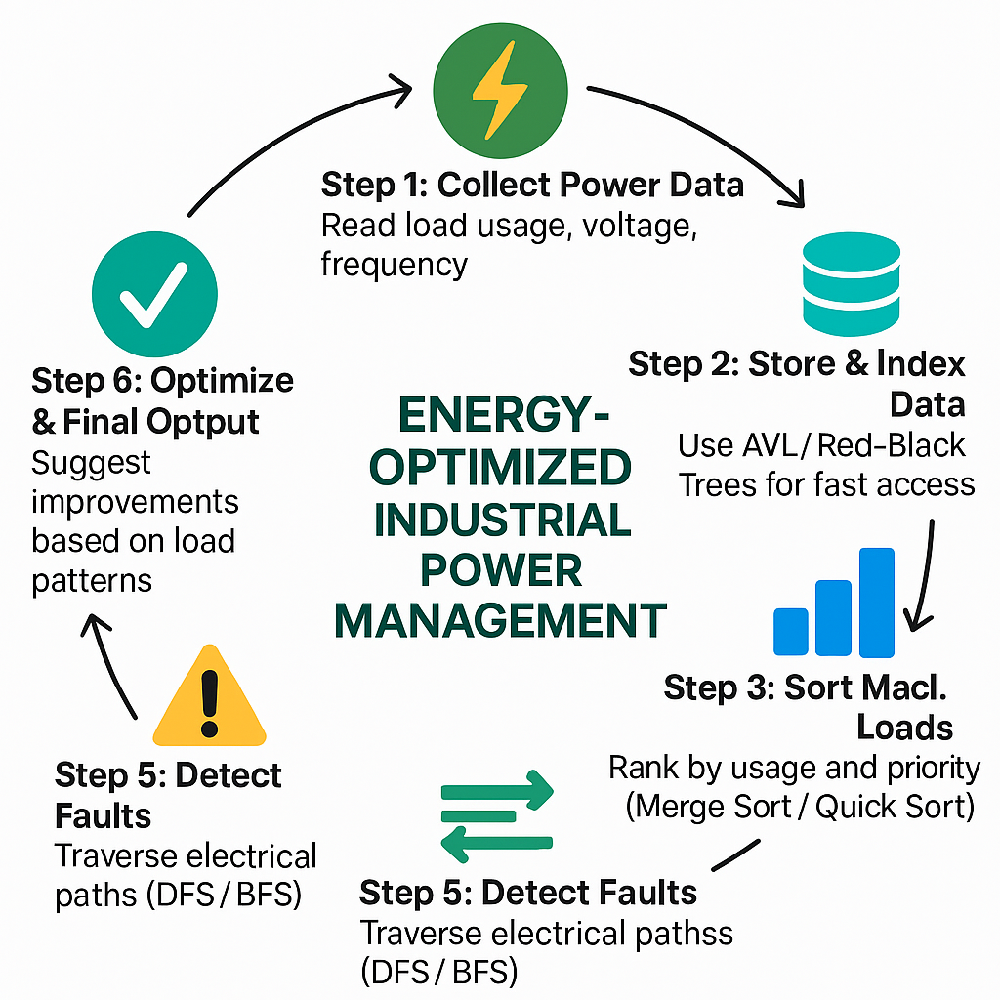
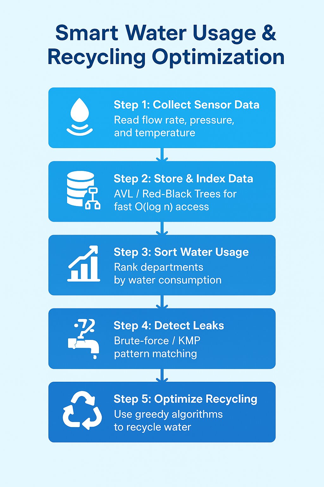
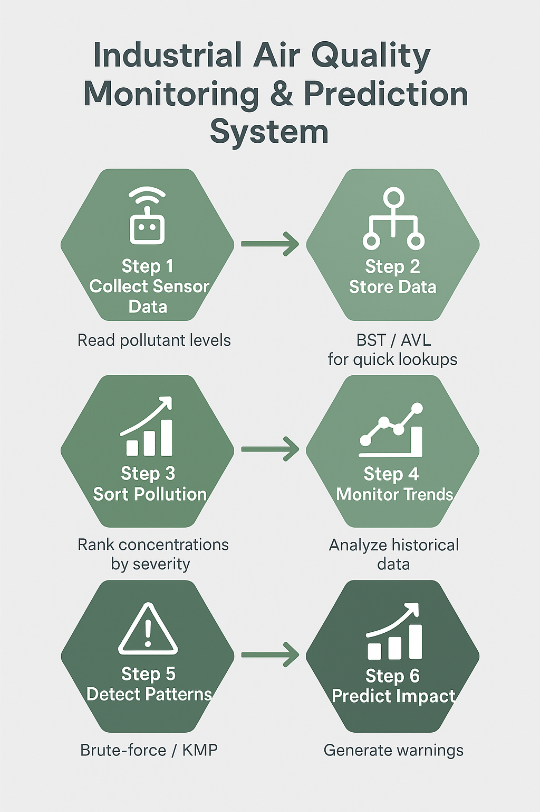
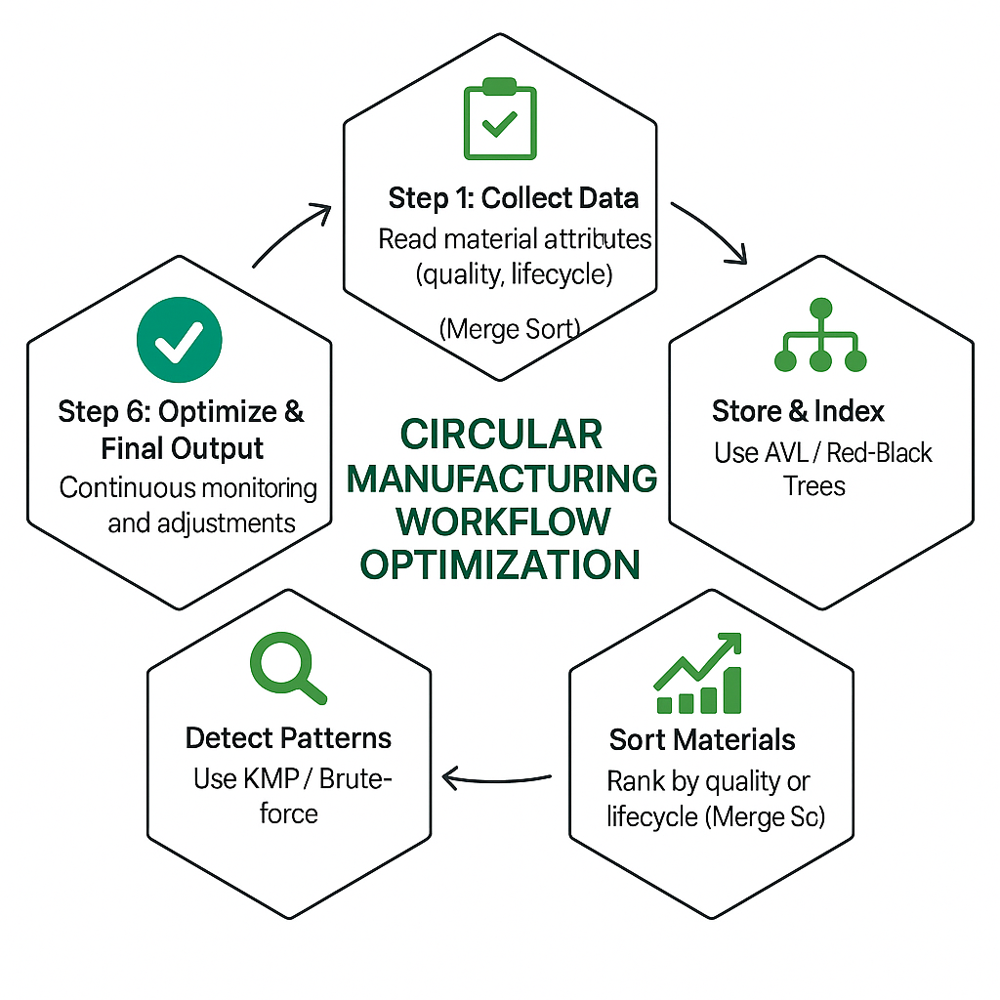
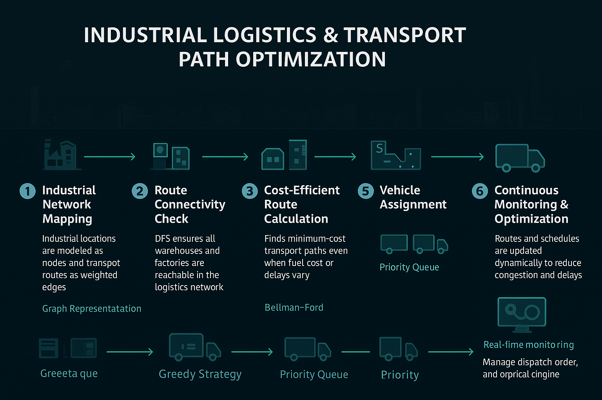

Vaishnavi
Industrial Sector
The industrial zone of VRITDHARA is planned strategically, utilizing the region’s natural access to water resources, transport networks, and a skilled workforce. The sector focuses on environmentally responsible production where each manufacturing unit follows a structured workflow for energy use, waste sorting, material flow, and emission control. Efficient routing models are used to monitor transportation paths, minimizing fuel consumption and ensuring faster movement of goods.
Integrating Design and Analysis of Algorithms with Real-World Industrial Applications
Sorting Algorithms
- Widely used in database systems to organize customer records, transaction logs, and inventory data.
- E-commerce platforms apply sorting techniques to arrange products by price, popularity, ratings, and delivery time.
- Operating systems rely on sorting for process scheduling, memory allocation, and job prioritization.
- Financial organizations use sorting to analyze stock prices, trade volumes, and market trends.
Searching Algorithms
- Used in databases to quickly locate records based on keys or indices.
- Search engines rely on searching algorithms to retrieve relevant web pages.
- Operating systems use searching to find files, processes, and memory blocks.
- Applications apply searching techniques to detect specific values in large datasets.
Divide and Conquer Algorithms
- Cloud computing platforms divide large computational tasks into smaller independent units for parallel processing.
- Image and video processing systems split media files for faster rendering and compression.
- Big data analytics frameworks process massive datasets by dividing them across multiple computing nodes.
Greedy Algorithms
- Network infrastructure planning uses greedy methods to minimize cabling and installation costs.
- Telecommunication routing systems apply greedy choices to optimize bandwidth usage.
- Data compression tools such as ZIP and JPEG use greedy strategies to reduce storage size.
- Operating systems use greedy scheduling to allocate CPU time efficiently.
Dynamic Programming
- Manufacturing industries apply dynamic programming for optimal resource allocation and cost reduction.
- Logistics and GPS systems use it to compute optimal routes considering multiple constraints.
- Financial institutions rely on optimization models for portfolio and investment planning.
- Artificial intelligence systems use dynamic programming to improve decision-making efficiency.
Graph Algorithms
- Navigation systems like GPS calculate shortest paths between locations using graph-based techniques.
- Social networking platforms analyze relationships and connections among users.
- Power distribution industries model electrical grids using graph representations.
- Supply chain networks use graph algorithms to manage flow between suppliers, warehouses, and retailers.
String Matching Algorithms
- Search engines match user queries with relevant web content efficiently.
- Plagiarism detection tools identify copied or similar text across documents.
- Bioinformatics applications use string matching to compare DNA and protein sequences.
- Text editors implement pattern matching for find-and-replace operations.
Hashing Algorithms
- Databases use hashing to enable fast indexing and data retrieval.
- Authentication systems securely store and verify passwords using hash functions.
- Cybersecurity applications rely on hashing for data integrity verification.
- Blockchain systems use hashing to ensure secure and tamper-proof transactions.
Backtracking Algorithms
- Scheduling systems use backtracking to handle constraint-based task assignments.
- Industrial planning systems solve configuration and allocation problems using backtracking.
- Artificial intelligence applications apply backtracking in problem-solving and decision trees.
- Game development engines use backtracking for puzzle-solving and pathfinding challenges.
Algorithm Analysis (Time and Space Complexity)
- Industries evaluate algorithm efficiency to ensure scalability as data volume increases.
- High-performance systems depend on complexity analysis to reduce execution time.
- Software optimization teams use complexity metrics to improve system reliability.
- Scheduling systems use backtracking to handle constraint-based task assignments.
- Industrial planning systems solve configuration and allocation problems using backtracking.
- Artificial intelligence applications apply backtracking in problem-solving and decision trees.
- Game development engines use backtracking for puzzle-solving and pathfinding challenges.
Algorithm Analysis (Time and Space Complexity)
- Industries evaluate algorithm efficiency to ensure scalability as data volume increases.
- High-performance systems depend on complexity analysis to reduce execution time.
- Software optimization teams use complexity metrics to improve system reliability.

Business Ideas
♻️ Smart Industrial Waste Management
Industries generate large volumes of mixed waste. Manual segregation, irregular collection schedules, and inefficient routing increase operational costs, create overflow issues, and result in unsafe disposal practices.

Algorithms Used
- Sorting methods (Merge Sort / Quick Sort) to rank bins by urgency or fill level.
- Graph-based routing using Dijkstra’s technique for shortest and most efficient collection paths.
- Balanced Tree structures (AVL / Red-Black Tree) for rapid storage and retrieval of bin data.
- Pattern matching (KMP / Brute-force) to detect hazardous waste signatures.
Implementation
Sensor readings from each bin are inserted into balanced trees, enabling fast access to high-priority bins in O(log n) time. Sorting methods arrange bins based on their fill levels or urgency. The industrial area is modeled as a weighted graph, and Dijkstra’s approach is used to compute the most efficient collection paths. For hazardous waste detection, sensor patterns are compared using string matching methods like KMP or brute-force scanning.
⚡ Energy-Optimized Industrial Power Management System
Industries waste significant amounts of electricity due to unmanaged machine loads, uneven distribution, and limited visibility of real-time usage. This not only increases operational cost but also contributes to higher carbon emissions and system instability.

Algorithms Used
- Greedy-based load adjustment to allocate power dynamically across machines.
- AVL / Red-Black Trees to maintain fast-access records of real-time power draw.
- Sorting techniques to sequence machines by priority or consumption intensity.
- Graph traversal methods (DFS/BFS) to scan for overload paths or faulty connections.
- Prim’s algorithm is used to design an energy-efficient industrial power network by minimizing overall transmission loss.
Implementation
Real-time power usage from each machine is continuously stored in balanced trees, ensuring rapid lookup of the most demanding nodes. Sorting techniques create an ordered list of machines based on consumption. A greedy mechanism then redistributes or limits load to maintain stability. To detect issues, graph traversal scans the electrical layout and highlights overloaded or compromised segments.
💧 Smart Water Usage & Recycling Optimization in Factories
Factories often suffer from excessive water wastage, ineffective recycling practices, and limited monitoring of consumption patterns. These inefficiencies increase operational costs and place substantial stress on local water resources.

Algorithms Used
- Brute-force / KMP pattern matching to detect unusual leakage patterns.
- Sorting techniques (Heap Sort / Merge Sort) to rank water usage across departments.
- AVL / Red-Black Trees for storing and querying real-time water flow data.
- Optimized time-complexity strategies for large-scale monitoring systems.
- Kruskal’s Algorithm (Efficient Water Pipeline Design)
Implementation
Continuous sensor readings are inserted into balanced trees, ensuring quick access and updates to flow records. Sorted usage data helps identify departments with excessive consumption. Leakage is detected by comparing flow signatures through pattern matching approaches like brute-force or KMP. Efficient algorithms are selected to ensure scalability across large industrial environments.
🏭 Industrial Air Quality Monitoring & Prediction System
Industrial areas often struggle with high levels of smoke, particulate matter, and chemical pollutants. Manual monitoring is slow, error-prone, and unable to provide timely warnings, increasing risks for workers and nearby communities.

Algorithms Used
- Graph traversal (BFS/DFS) to study airflow and pollutant movement.
- Sorting approaches to classify pollutant concentrations by severity.
- Tree structures (BST/AVL) to store and retrieve real-time sensor data.
- Pattern matching (Brute-force / KMP) for identifying toxic gas combinations.
Implementation
Air-quality sensors continuously record pollutant levels, which are organized in BST/AVL structures for rapid querying. Sorting methods categorize readings based on safety limits. The industrial layout is represented as a graph to study airflow pathways using BFS/DFS, helping identify pollution sources. Pattern matching checks for combinations of harmful gases using predefined chemical signatures.
🔁 Circular Manufacturing Workflow Optimization

Manufacturing units often struggle to efficiently reuse materials, track the lifecycle of components, and manage reverse logistics. Lack of visibility in reusable parts, delays in returning materials to production, and unoptimized workflow loops increase overall resource consumption, waste generation, and operational costs.
Algorithms Used
- A greedy approach always selects the component with maximum remaining usability or lowest refurbishment cost first.
- Topological Sorting for Circular Workflow Stages,Circular manufacturing follows ordered stages: Production → Usage → Return → Refurbishment → Reuse → Recycling
- Queue (FIFO) Returned materials arrive over time and must be processed in arrival order.
- Dynamic Programming helps decide minimum total cost over multiple cycles.
- Hashing for Fast Component Identification,Each component has a unique ID or serial number.
Implementation
Circular manufacturing workflows are optimized using greedy strategies that prioritize components with the highest remaining usability, ensuring faster reuse and reduced waste. Topological sorting maintains the correct execution order among production, refurbishment, reuse, and recycling stages, preventing workflow conflicts. Reverse logistics are efficiently managed using queues to process returned components in a first-come-first-served manner, avoiding delays and backlogs. Dynamic programming evaluates multiple reuse and refurbishment options to minimize overall lifecycle costs across repeated manufacturing cycles. Hashing enables rapid identification and tracking of components, providing instant access to lifecycle history and improving system scalability.
🚚 Industrial Logistics & Transport Path Optimization
Industrial logistics often suffer from inefficient transport routes, delays in material movement, and increased fuel consumption. Poor routing decisions lead to higher operational costs and reduced supply-chain efficiency.

Algorithms Used
- Graph traversal (DFS) to analyze connectivity between warehouses and industrial units.
- Shortest path algorithms (Bellman–Ford) to optimize transport routes with varying costs.
- strategies for vehicle assignment and load scheduling.
- Priority Queue-based scheduling for managing dispatch and delivery order.
Implementation
The logistics network is modeled as a weighted graph representing warehouses, factories, and transport routes. Bellman–Ford computes efficient paths even when fuel costs, delays, or route conditions vary dynamically. DFS checks route connectivity to ensure all locations remain reachable, while greedy strategies assign vehicles to high-priority deliveries first.A priority queue is used to manage transport tasks based on urgency, distance, or delivery deadlines. Routes or delivery requests with higher priority (such as perishable goods or critical raw materials) are processed first. This ensures faster decision-making, reduced delays, and efficient utilization of transport resources in industrial logistics.
Detailed Discription Of Algorithms Used In Each Concept
Algorithms Used In Smart industrial Waste Management
Sorting Algorithms
Merge Sort divides the bin list into smaller parts, sorts them, and merges them back in order. It ensures fast and stable sorting with O(n log n) time, helping identify the most filled bins quickly.
An AVL Tree keeps itself balanced after every insertion, ensuring fast searching and updating. This allows bin sensor data to be accessed in O(log n) time even when data grows large.
Dijkstra computes the minimum travel distance from the collection truck to every location. It helps find the most efficient route between industrial blocks using weighted paths.
KMP searches for harmful chemical patterns efficiently within sensor data strings. It avoids unnecessary comparisons using an LPS table, making detection fast and accurate.
#includeusing namespace std; struct Bin { int id; float fillLevel; }; void merge(Bin bins[], int l, int m, int r) { int n1 = m - l + 1; int n2 = r - m; Bin L[50], R[50]; for (int i = 0; i < n1; i++) L[i] = bins[l + i]; for (int j = 0; j < n2; j++) R[j] = bins[m + 1 + j]; int i = 0, j = 0, k = l; while (i < n1 && j < n2) { if (L[i].fillLevel > R[j].fillLevel) bins[k++] = L[i++]; else bins[k++] = R[j++]; } while (i < n1) bins[k++] = L[i++]; while (j < n2) bins[k++] = R[j++]; } void mergeSort(Bin bins[], int l, int r) { if (l < r) { int m = (l + r) / 2; mergeSort(bins, l, m); mergeSort(bins, m + 1, r); merge(bins, l, m, r); } } int main() { Bin bins[5] = { {101, 75.2}, {102, 40.1}, {103, 88.5}, {104, 56.9}, {105, 92.3} }; int n = 5; mergeSort(bins, 0, n - 1); cout << "Bins sorted by urgency (highest fill first):\n"; for (int i = 0; i < n; i++) cout << "Bin " << bins[i].id << " -> " << bins[i].fillLevel << "%\n"; return 0; }
#includeusing namespace std; struct Node { int binID; float fill; Node *left, *right; int height; }; int height(Node* n) { return n ? n->height : 0; } Node* rotateRight(Node* y) { Node* x = y->left; Node* T = x->right; x->right = y; y->left = T; y->height = 1 + (height(y->left) > height(y->right) ? height(y->left) : height(y->right)); x->height = 1 + (height(x->left) > height(x->right) ? height(x->left) : height(x->right)); return x; } Node* rotateLeft(Node* x) { Node* y = x->right; Node* T = y->left; y->left = x; x->right = T; x->height = 1 + (height(x->left) > height(x->right) ? height(x->left) : height(x->right)); y->height = 1 + (height(y->left) > height(y->right) ? height(y->left) : height(y->right)); return y; } Node* insert(Node* root, int id, float fill) { if (!root) return new Node{id, fill, NULL, NULL, 1}; if (id < root->binID) root->left = insert(root->left, id, fill); else root->right = insert(root->right, id, fill); root->height = 1 + (height(root->left) > height(root->right) ? height(root->left) : height(root->right)); int balance = height(root->left) - height(root->right); if (balance > 1 && id < root->left->binID) return rotateRight(root); if (balance < -1 && id > root->right->binID) return rotateLeft(root); if (balance > 1 && id > root->left->binID) { root->left = rotateLeft(root->left); return rotateRight(root); } if (balance < -1 && id < root->right->binID) { root->right = rotateRight(root->right); return rotateLeft(root); } return root; } void inorder(Node* root) { if (root) { inorder(root->left); cout << "Bin " << root->binID << " -> Fill: " << root->fill << "%\n"; inorder(root->right); } } int main() { Node* root = NULL; root = insert(root, 101, 72.3); root = insert(root, 103, 55.1); root = insert(root, 95, 88.2); root = insert(root, 110, 43.7); cout << "AVL Tree Inorder Traversal (Sorted by Bin ID):\n"; inorder(root); return 0; }
#includeusing namespace std; #define INF 99999 int main() { int graph[5][5] = { {0, 10, 0, 30, 0}, {10, 0, 50, 0, 0}, {0, 50, 0, 20, 10}, {30, 0, 20, 0, 60}, {0, 0, 10, 60, 0} }; int n = 5, start = 0; int dist[5], visited[5] = {0}; for (int i = 0; i < n; i++) dist[i] = INF; dist[start] = 0; for (int c = 0; c < n - 1; c++) { int u = -1; for (int i = 0; i < n; i++) if (!visited[i] && (u == -1 || dist[i] < dist[u])) u = i; visited[u] = 1; for (int v = 0; v < n; v++) if (!visited[v] && graph[u][v] && dist[u] + graph[u][v] < dist[v]) dist[v] = dist[u] + graph[u][v]; } cout << "Shortest waste collection distance from node 0:\n"; for (int i = 0; i < n; i++) cout << "To " << i << " -> " << dist[i] << "\n"; return 0; }
#include#include using namespace std; void buildLPS(char pat[], int m, int lps[]) { int len = 0, i = 1; lps[0] = 0; while (i < m) { if (pat[i] == pat[len]) { len++; lps[i] = len; i++; } else { if (len != 0) len = lps[len - 1]; else { lps[i] = 0; i++; } } } } int KMP(char text[], char pat[]) { int n = strlen(text); int m = strlen(pat); int lps[50]; buildLPS(pat, m, lps); int i = 0, j = 0; while (i < n) { if (text[i] == pat[j]) { i++; j++; } if (j == m) return 1; // pattern found if (i < n && text[i] != pat[j]) { if (j != 0) j = lps[j - 1]; else i++; } } return 0; } int main() { char sensorData[100] = "A1B2C3XHZACID900"; char pattern[20] = "ACID"; if (KMP(sensorData, pattern)) cout << "Hazardous waste detected!\n"; else cout << "No hazardous pattern found.\n"; return 0; }
Algorithms Used In Energy-Optimized Industrial Power Management System
A greedy algorithm allocates power to machines by always choosing the highest-priority or highest-consumption machine first. It helps prevent overload by instantly reducing or redistributing power where needed. This ensures real-time, rapid power balancing.
AVL Tree keeps every insertion balanced, so reading or updating any machine’s power usage is always O(log n). Perfect for real-time monitoring where fast lookup is needed. It avoids slowdowns even when many machines report power.
Merge Sort divides the list, sorts both halves, and merges them efficiently. It guarantees O(n log n) even for large industrial datasets. Used to rank machines by consumption or priority.
BFS explores electrical connections layer by layer. It is ideal for identifying overloaded routes or unreachable nodes. Ensures systematic scanning of the entire power grid layout.
Prim’s algorithm constructs a minimum spanning tree that connects all machines or power units with minimum total transmission cost. In an industrial power system, this helps reduce energy loss, wiring cost, and redundancy.
#includeusing namespace std; int main() { int machines = 5; // Current power consumption of machines (in kW) int load[5] = {40, 70, 20, 90, 50}; // Maximum allowed load in system int maxLimit = 200; // Calculate total load int totalLoad = 0; for (int i = 0; i < machines; i++) totalLoad += load[i]; cout << "Total Power Load = " << totalLoad << " kW\n"; // Greedy load reduction: reduce highest consuming first while (totalLoad > maxLimit) { int maxIndex = 0; // Find machine using highest power for (int i = 1; i < machines; i++) { if (load[i] > load[maxIndex]) maxIndex = i; } cout << "Reducing load of Machine " << maxIndex << " (Before = " << load[maxIndex] << " kW)\n"; load[maxIndex] -= 10; // reduce power supply totalLoad -= 10; } cout << "Power stabilized at " << totalLoad << " kW\n"; return 0; }
#includeusing namespace std; int main() { int graph[5][5] = { {0,1,0,1,0}, {1,0,1,0,0}, {0,1,0,1,1}, {1,0,1,0,0}, {0,0,1,0,0} }; int queue[10], front = 0, rear = 0; int visited[5] = {0}; int start = 0; // starting node (power source) queue[rear++] = start; visited[start] = 1; cout << "BFS Traversal (checking electrical connections):\n"; while (front < rear) { int node = queue[front++]; cout << "Node " << node << " checked.\n"; for (int i = 0; i < 5; i++) { if (graph[node][i] == 1 && visited[i] == 0) { visited[i] = 1; queue[rear++] = i; } } } return 0; }
#includeusing namespace std; #define V 5 #define INF 9999 int main() { int cost[V][V] = { {0, 2, INF, 6, INF}, {2, 0, 3, 8, 5}, {INF, 3, 0, INF, 7}, {6, 8, INF, 0, 9}, {INF, 5, 7, 9, 0} }; int selected[V] = {0}; selected[0] = 1; // Start from first power unit int totalCost = 0; cout << "Power Connections (Minimum Energy Loss):\n"; for (int edges = 0; edges < V - 1; edges++) { int min = INF, x = 0, y = 0; for (int i = 0; i < V; i++) { if (selected[i]) { for (int j = 0; j < V; j++) { if (!selected[j] && cost[i][j] < min) { min = cost[i][j]; x = i; y = j; } } } } cout << "Unit " << x << " -> Unit " << y << " Cost: " << cost[x][y] << endl; totalCost += cost[x][y]; selected[y] = 1; } cout << "Total Power Transmission Cost: " << totalCost << endl; return 0; }
Algorithms Used In Smart Water Usage & Recycling Optimization system
Brute-force compares the leakage pattern with every possible position in the sensor data. It is simple, requires no preprocessing, and works well for small-to-medium flow signatures. Useful for detecting unusual or suspicious water flow patterns.
Heap Sort builds a max-heap and repeatedly extracts the largest element. It guarantees O(n log n) performance without recursion. Useful for ranking departments by highest water consumption.
A linear scan checks all water usage values in a single pass. This ensures O(n) time, ideal for large dashboards or continuous monitoring screens. Useful for finding peaks, drops, or sudden unusual values.
Kruskal’s algorithm builds a minimum spanning tree by selecting water pipelines with the lowest leakage or installation cost first. In smart water management, it helps connect tanks, treatment units, and recycling plants efficiently. It is mainly useful for network planning, not real-time water flow control.
#include#include using namespace std; int bruteForceLeakage(char text[], char pat[]) { int n = strlen(text); int m = strlen(pat); for (int i = 0; i <= n - m; i++) { int j = 0; while (j < m && text[i + j] == pat[j]) { j++; } if (j == m) return 1; // pattern matched → leakage found } return 0; } int main() { char sensorFlow[100] = "A9X33LEAKFLOW92Q"; char leakPattern[20] = "LEAK"; if (bruteForceLeakage(sensorFlow, leakPattern)) cout << "❗ Leakage detected in water flow pipeline!\n"; else cout << "✔ No leakage found.\n"; return 0; }
#includeusing namespace std; // Single bottom-up heap building function (same as your style) void BuildHeap(int H[], int n) { for (int i = n / 2; i >= 1; i--) { int k = i; int v = H[k]; bool heap = false; while (!heap && (2 * k) <= n) { int j = 2 * k; if (j < n) { if (H[j] < H[j + 1]) j = j + 1; } if (v >= H[j]) { heap = true; } else { H[k] = H[j]; k = j; } } H[k] = v; } } int main() { int waterFlow[] = {0, 45, 12, 89, 33, 21, 67}; int n = 6; cout << "Original Water Usage: "; for (int i = 1; i <= n; i++) cout << waterFlow[i] << " "; BuildHeap(waterFlow, n); cout << "\nMax-Heap (High use departments at top): "; for (int i = 1; i <= n; i++) cout << waterFlow[i] << " "; return 0; }
#includeusing namespace std; int main() { int readings[10] = {30, 45, 50, 120, 40, 33, 90, 500, 38, 36}; int maxUse = readings[0]; for (int i = 1; i < 10; i++) { if (readings[i] > maxUse) maxUse = readings[i]; } cout << "Highest water usage detected: " << maxUse << " L/min\n"; return 0; }
#includeusing namespace std; #define MAX 10 struct Edge { int u, v, cost; }; int parent[MAX]; int find(int i) { while (parent[i] != i) i = parent[i]; return i; } void unionSet(int a, int b) { parent[a] = b; } int main() { int n = 4; // Water units (tanks / plants) int e = 5; // Possible pipelines Edge edges[5] = { {0, 1, 10}, {0, 2, 6}, {0, 3, 5}, {1, 3, 15}, {2, 3, 4} }; // Initialize disjoint sets for (int i = 0; i < n; i++) parent[i] = i; // Simple sorting of edges by cost (Bubble Sort) for (int i = 0; i < e - 1; i++) { for (int j = 0; j < e - i - 1; j++) { if (edges[j].cost > edges[j + 1].cost) { Edge temp = edges[j]; edges[j] = edges[j + 1]; edges[j + 1] = temp; } } } int totalCost = 0; cout << "Selected Water Pipelines:\n"; for (int i = 0; i < e; i++) { int a = find(edges[i].u); int b = find(edges[i].v); if (a != b) { cout << "Tank " << edges[i].u << " -> Tank " << edges[i].v << " Cost: " << edges[i].cost << endl; totalCost += edges[i].cost; unionSet(a, b); } } cout << "Minimum Pipeline Cost: " << totalCost << endl; return 0; }
Algorithms Used In Industrial Air Quality Monitoring & Prediction System
Quick Sort arranges pollutant concentration values by selecting a pivot and partitioning readings around it. It is fast in practice with O(n log n) average time and suitable for real-time classification.
BST stores air quality sensor readings in a hierarchical structure for quick searching. Average search and insertion take O(log n) time when data is balanced.
DFS explores airflow paths deeply to trace pollution sources through connected zones. It helps detect hidden or deeply connected pollution routes.
Checks all possible positions to find harmful gas combinations. It is simple and easy to implement for small sensor data streams.
#include
using namespace std;
int partition(int a[], int low, int high) {
int pivot = a[high];
int i = low - 1;
for (int j = low; j < high; j++) {
if (a[j] <= pivot) {
i++;
int temp = a[i];
a[i] = a[j];
a[j] = temp;
}
}
int temp = a[i + 1];
a[i + 1] = a[high];
a[high] = temp;
return i + 1;
}
void quickSort(int a[], int low, int high) {
if (low < high) {
int p = partition(a, low, high);
quickSort(a, low, p - 1);
quickSort(a, p + 1, high);
}
}
int main() {
int pollution[] = {180, 90, 310, 150, 60, 240};
int n = 6;
quickSort(pollution, 0, n - 1);
cout << "Pollution levels (Low → High): ";
for (int i = 0; i < n; i++)
cout << pollution[i] << " ";
return 0;
}
#include
using namespace std;
struct Node {
int data;
Node* left;
Node* right;
};
Node* newNode(int data) {
Node* node = new Node();
node->data = data;
node->left = node->right = NULL;
return node;
}
Node* insert(Node* root, int data) {
if (root == NULL)
return newNode(data);
if (data < root->data)
root->left = insert(root->left, data);
else
root->right = insert(root->right, data);
return root;
}
void inorder(Node* root) {
if (root != NULL) {
inorder(root->left);
cout << root->data << " ";
inorder(root->right);
}
}
int main() {
Node* root = NULL;
int sensors[] = {150, 90, 300, 120, 60};
for (int i = 0; i < 5; i++)
root = insert(root, sensors[i]);
cout << "Air quality sensor readings: ";
inorder(root);
return 0;
}
#include
using namespace std;
int graph[5][5] = {
{0,1,1,0,0},
{1,0,0,1,0},
{1,0,0,1,1},
{0,1,1,0,1},
{0,0,1,1,0}
};
int visited[5] = {0};
void DFS(int v) {
cout << v << " ";
visited[v] = 1;
for (int i = 0; i < 5; i++) {
if (graph[v][i] == 1 && !visited[i])
DFS(i);
}
}
int main() {
cout << "Airflow traversal (DFS): ";
DFS(0);
return 0;
}
Algorithms Used In Circular Manufacturing Workflow Optimization
A greedy algorithm selects the component with the highest remaining usability first to maximize reuse.
Topological sorting ensures manufacturing stages are executed in the correct dependency order. It prevents refurbishment or recycling from occurring before production or usage.
A queue processes returned components in first-come, first-served order. This prevents backlog and ensures fair handling of returned materials.
Dynamic programming calculates the minimum total cost over multiple reuse cycles. It avoids repeated calculations by storing intermediate results.
Hashing enables instant lookup of component lifecycle data using unique IDs. It significantly reduces search time in large circular manufacturing systems.
#includeusing namespace std; int main() { int graph[4][4] = { {0,1,0,0}, // Production {0,0,1,0}, // Usage {0,0,0,1}, // Refurbishment {0,0,0,0} // Recycling }; int indeg[4] = {0}; for (int i = 0; i < 4; i++) for (int j = 0; j < 4; j++) indeg[j] += graph[i][j]; cout << "Optimized workflow order: "; for (int k = 0; k < 4; k++) { for (int i = 0; i < 4; i++) { if (indeg[i] == 0) { cout << i << " "; indeg[i] = -1; for (int j = 0; j < 4; j++) if (graph[i][j] == 1) indeg[j]--; break; } } } return 0; }
#includeusing namespace std; int main() { int queue[5], front = 0, rear = -1; queue[++rear] = 101; queue[++rear] = 102; queue[++rear] = 103; cout << "Processing returned components: "; while (front <= rear) { cout << queue[front++] << " "; } return 0; }
#includeusing namespace std; int min(int a, int b) { return (a < b) ? a : b; } int main() { int reuseCost[] = {0, 5, 9, 12}; int dp[4]; dp[0] = 0; for (int i = 1; i < 4; i++) { dp[i] = min(dp[i - 1] + reuseCost[i], reuseCost[i]); } cout << "Minimum lifecycle cost: " << dp[3]; return 0; }
#includeusing namespace std; int main() { int hashTable[10] = {0}; int componentID = 27; int index = componentID % 10; hashTable[index] = componentID; cout << "Component stored at index: " << index; return 0; }
Algorithms Used In Industrial Logistics & Transport Path Optimization
Bellman–Ford computes the shortest transport cost from a central warehouse to all industrial units, even when routes have varying fuel costs or delays. It repeatedly relaxes all transport paths to ensure optimal routing decisions. This makes it suitable for real-world logistics networks with dynamic conditions.
A priority queue schedules transport requests based on urgency or delivery importance. High-priority industrial shipments such as raw materials or perishable goods are dispatched first. This ensures efficient resource utilization and reduced delivery delays.
Floyd–Warshall computes the shortest transport cost between every pair of warehouses and factories in an industrial logistics network. It is useful for pre-planning and analysis where all possible routes must be evaluated in advance. However, due to its O(n³) complexity, it is best suited for small or medium-scale industrial layouts.
#includeusing namespace std; #define INF 9999 int main() { int V = 5; // Warehouses / factories int E = 7; // Transport routes int src = 0; // Central warehouse // Each edge: {source, destination, transport cost} int edges[7][3] = { {0, 1, 4}, {0, 2, 5}, {1, 2, -2}, {1, 3, 6}, {2, 3, 3}, {2, 4, 4}, {3, 4, 2} }; int dist[5]; // Initialize distances for (int i = 0; i < V; i++) dist[i] = INF; dist[src] = 0; // Bellman-Ford relaxation for (int i = 1; i < V; i++) { for (int j = 0; j < E; j++) { int u = edges[j][0]; int v = edges[j][1]; int w = edges[j][2]; if (dist[u] != INF && dist[u] + w < dist[v]) dist[v] = dist[u] + w; } } cout << "Minimum transport cost from warehouse 0:\n"; for (int i = 0; i < V; i++) cout << "To location " << i << " -> " << dist[i] << endl; return 0; }
#include#include using namespace std; int main() { // Priority queue: higher value = higher priority priority_queue deliveryPriority; // Delivery urgency levels (higher = more urgent) deliveryPriority.push(40); // normal goods deliveryPriority.push(90); // critical raw material deliveryPriority.push(60); // semi-urgent deliveryPriority.push(100); // emergency delivery cout << "Delivery dispatch order (highest priority first):\n"; while (!deliveryPriority.empty()) { cout << "Dispatch delivery with priority " << deliveryPriority.top() << endl; deliveryPriority.pop(); } return 0; }
#includeusing namespace std; #define INF 9999 int main() { int n = 5; // Number of warehouses / factories // Transport cost matrix // INF indicates no direct route int cost[5][5] = { {0, 4, 5, INF, INF}, {4, 0, -2, 6, INF}, {5, -2, 0, 3, 4}, {INF, 6, 3, 0, 2}, {INF, INF, 4, 2, 0} }; // Floyd–Warshall Algorithm for (int k = 0; k < n; k++) { for (int i = 0; i < n; i++) { for (int j = 0; j < n; j++) { if (cost[i][k] + cost[k][j] < cost[i][j]) cost[i][j] = cost[i][k] + cost[k][j]; } } } cout << "All-Pairs Minimum Transport Cost Matrix:\n"; for (int i = 0; i < n; i++) { for (int j = 0; j < n; j++) { if (cost[i][j] == INF) cout << "INF "; else cout << cost[i][j] << " "; } cout << endl; } return 0; }
Efficiency Analysis of Algorithms Used
| Algorithm | Purpose in Smart Industry | Time Complexity | Space Complexity | Efficiency Impact |
|---|---|---|---|---|
| Sorting Algorithms | Organizing resources, products, schedules | O(n log n) | O(n) | Faster decision-making and optimized workflow |
| Searching Algorithms | Locating machines, inventory, and data records | O(log n) | O(1) | Instant access to critical industrial data |
| Greedy Algorithms | Resource allocation and scheduling | O(n log n) | O(1) | Cost-efficient and quick optimization |
| Graph Algorithms | Transportation, logistics, and supply-chain routing | O(V + E) | O(V) | Efficient path planning and reduced fuel usage |
| Dynamic Programming | Long-term production and cost optimization | O(n × m) | O(n × m) | Maximum efficiency with optimal solutions |
"Smart Industries for a Sustainable Future"
The industrial sector of VRITDHARA stands as a powerful example of how algorithm-driven intelligence can transform modern industries into efficient, sustainable, and future-ready systems. By embedding core algorithms—such as sorting, searching, graph-based routing, greedy optimization, and dynamic programming—directly into industrial workflows, the sector achieves faster decision-making, optimized resource utilization, and reduced environmental impact. Smart systems for waste management, energy distribution, water recycling, air quality monitoring, circular manufacturing, and logistics ensure minimal cost, lower emissions, and higher productivity while aligning strongly with global sustainability goals. Overall, VRITDHARA’s industrial model demonstrates that the practical integration of Design and Analysis of Algorithms is not just a technical advantage, but a strategic foundation for building resilient, eco-conscious, and highly efficient industrial ecosystems.